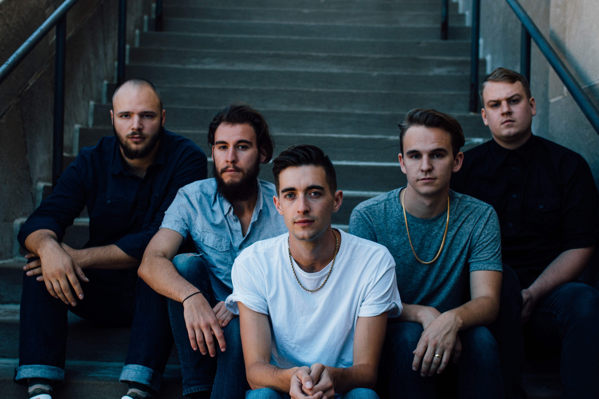
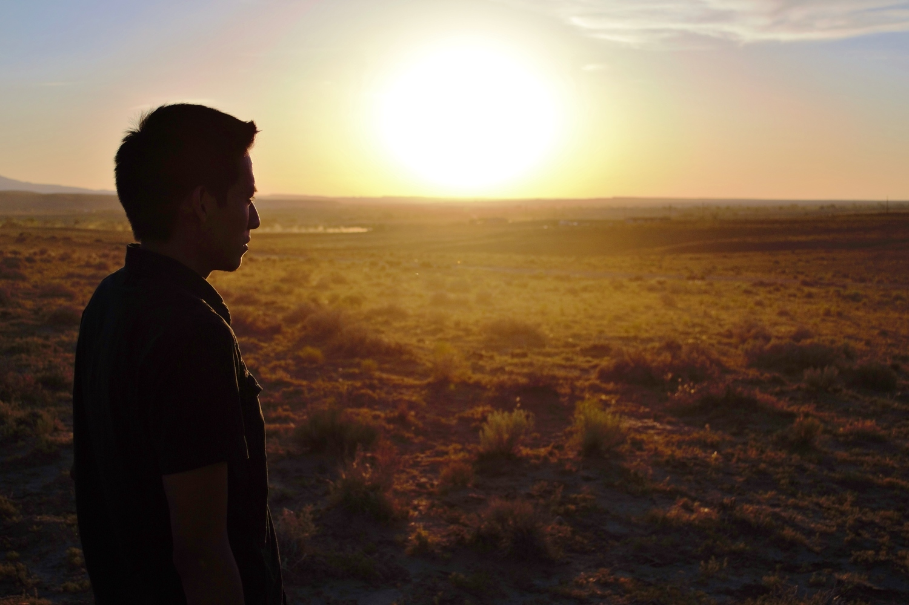
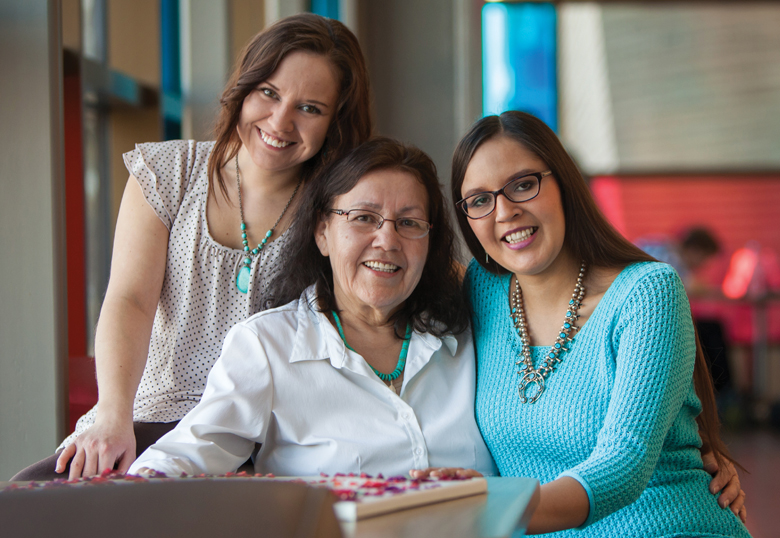
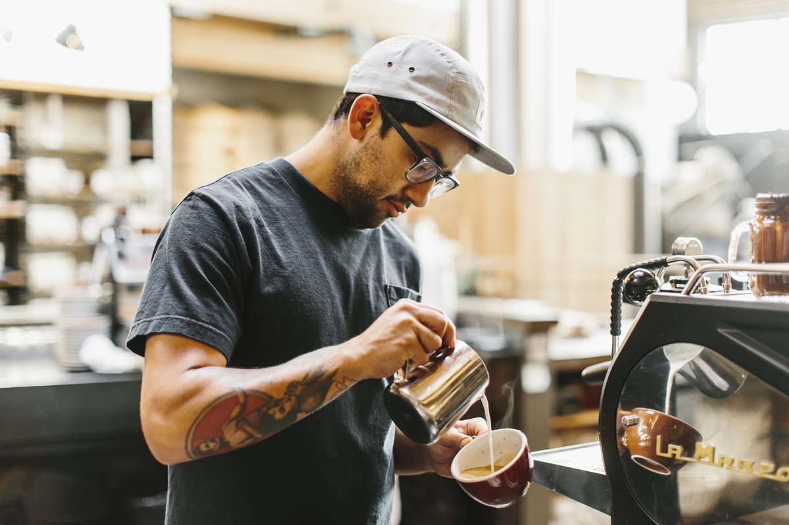
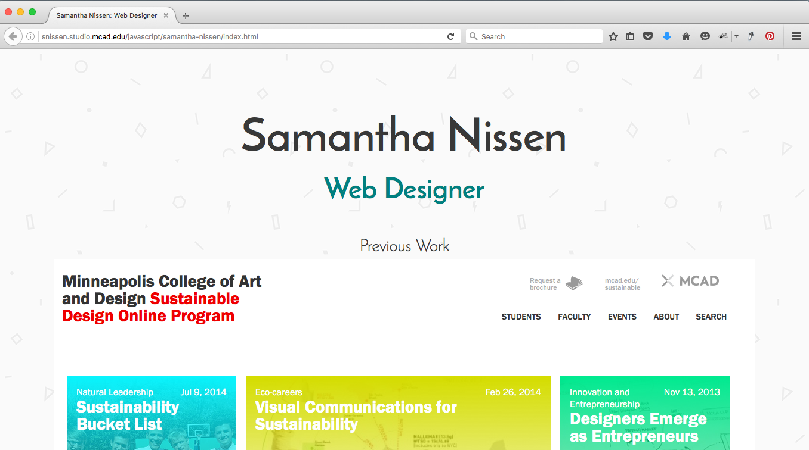
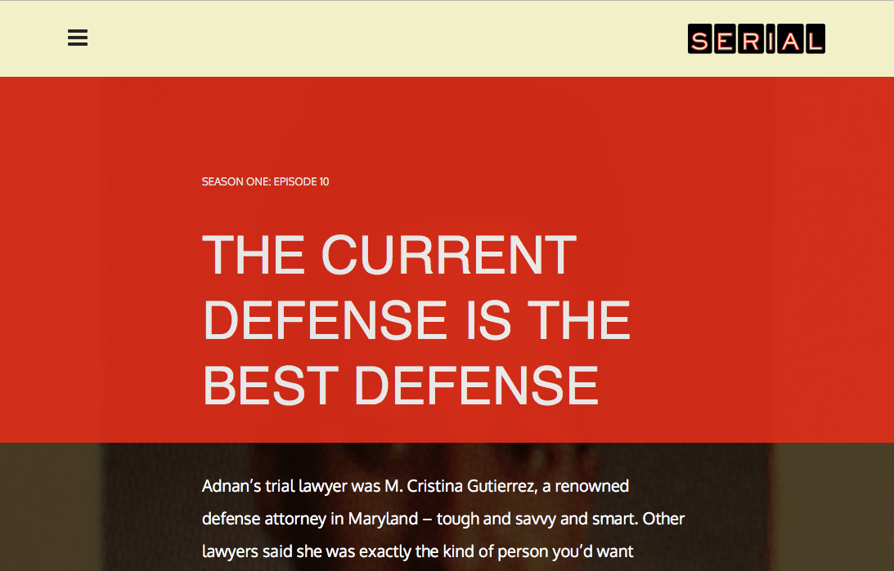
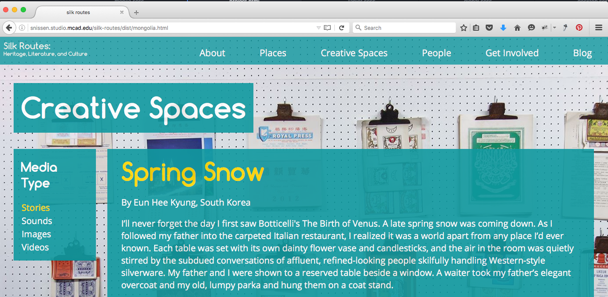

I worked with Halfloves, a band based in Iowa City, to create a website in anticipation for their upcoming album. The responsive website incorporates Halfloves' album artwork to ensure consistency in branding.
In fall 2015, I coordinated an online exchange through the International Writing Program that brought together 32 indigenous writers and photographers living in Australia and the United States. The participants created fiction, nonfiction, poetry, and photography centered on the theme of "narrative witness." In spring 2016, I created an online publication utilizing Squarespace to showcase the collected work.
This website was designed for an assignment in MCAD's branding course. Check out my process book!
This website was designed for an assignment in MCAD's branding course. By incorporating motion, the website makes learning about coffee fun!
This old version of my portfolio demonstrates my beginning-level understanding of JavaScript and jQuery.
During my first semester in MCAD's IDM program, I recreated the first season of Serial Podcast's website. The experience was a great introduction to building websites off of a design mockup.
I designed and built this website during my first semester in MCAD's IDM program. Check out these pages: homepage, creative spaces, and the short story "Spring Snow."
